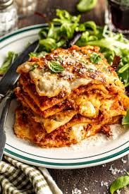

Lasagna

Ingredients
- Cheese Filling: For this classic lasagna recipe, the cheese filling has ricotta and parmesan with seasonings. You can make homemade ricotta cheese or replace it with cottage cheese.
- Meat: I use both Italian sausage and ground beef for great flavor. If using all beef, add ¼ teaspoon of fennel seeds and some Italian seasoning to the meat mixture for flavor, or make my homemade Italian sausage.
- Sauce: To keep this sauce quick, I use pasta sauce or marinara sauce (it’s easy to make from scratch with crushed tomatoes and canned tomatoes if you’d prefer). If using store-bought sauce, I love Rao’s for flavor
- Spinach (variation): Spinach is optional but delicious in lasagna. For spinach lasagna, thaw 10oz of frozen spinach, squeeze out the moisture, and add it along with the cheese layer.